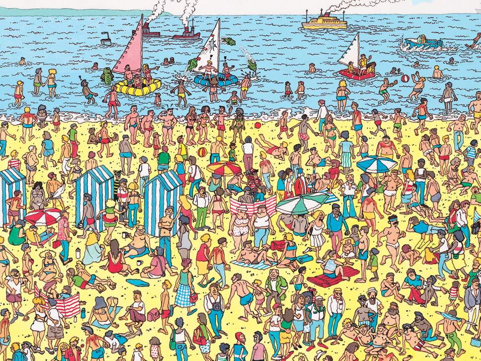
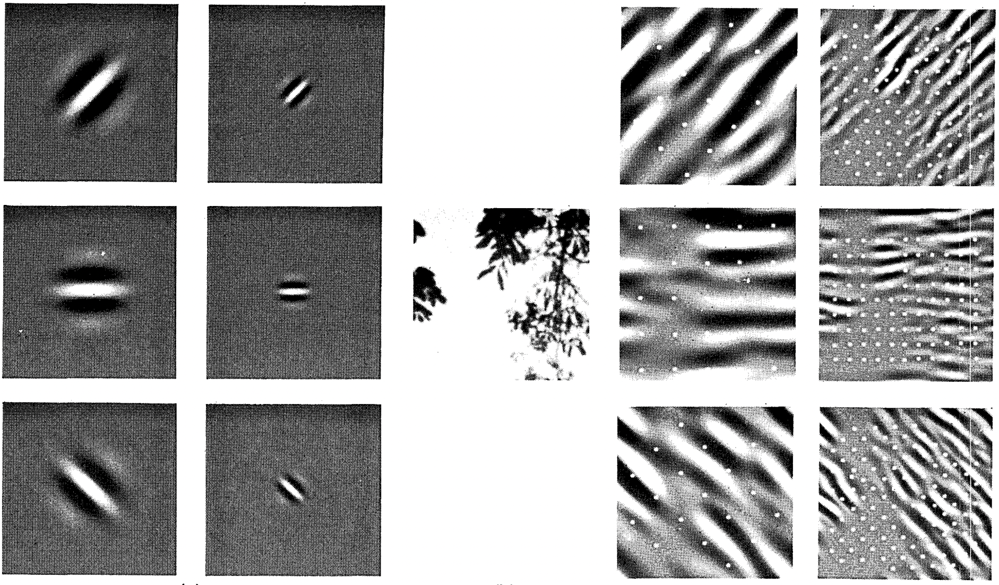
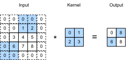

Code
import d2l
import torch
from torch import nn
\[\begin{aligned} \left[\mathbf{H}\right]_{i, j} &= [\mathbf{U}]_{i, j} + \sum_k \sum_l[\mathsf{W}]_{i, j, k, l} [\mathbf{X}]_{k, l}\\ &= [\mathbf{U}]_{i, j} + \sum_a \sum_b [\mathsf{V}]_{i, j, a, b} [\mathbf{X}]_{i+a, j+b}.\end{aligned}\]
\[[\mathbf{H}]_{i, j} = u + \sum_a\sum_b [\mathbf{V}]_{a, b} [\mathbf{X}]_{i+a, j+b}.\]
\[[\mathbf{H}]_{i, j} = u + \sum_{a = -\Delta}^{\Delta} \sum_{b = -\Delta}^{\Delta} [\mathbf{V}]_{a, b} [\mathbf{X}]_{i+a, j+b}.\]
\[(f * g)(\mathbf{x}) = \int f(\mathbf{z}) g(\mathbf{x}-\mathbf{z}) d\mathbf{z}.\]
\[(f * g)(i, j) = \sum_a\sum_b f(a, b) g(i-a, j-b).\]

\([\mathsf{H}]_{i,j,d} = \sum_{a = -\Delta}^{\Delta} \sum_{b = -\Delta}^{\Delta} \sum_c [\mathsf{V}]_{a, b, c, d} [\mathsf{X}]_{i+a, j+b, c},\)
where \(d\) indexes output channels
import d2l
import torch
from torch import nn
def corr2d(X, K): #@save
"""Compute 2D cross-correlation."""
h, w = K.shape
Y = d2l.zeros((X.shape[0] - h + 1, X.shape[1] - w + 1))
for i in range(Y.shape[0]):
for j in range(Y.shape[1]):
Y[i, j] = d2l.reduce_sum((X[i: i + h, j: j + w] * K))
return Y# Create a 256x256 sparse image with a few 1s
X = torch.zeros((64, 64))
X[11, 23] = 1.0
X[23, 23] = 1.0
X[56, 48] = 1.0
X[19, 54] = 1.0
# Create a 3x3 cross-shaped kernel
K = torch.tensor([[0.0, 1.0, 0.0],
[1.0, 1.0, 1.0],
[0.0, 1.0, 0.0]])
# Apply the correlation
Y = corr2d(X, K)
import matplotlib.pyplot as plt
fig, (ax1, ax2, ax3) = plt.subplots(1, 3, figsize=(15, 5))
# Plot input image X
ax1.imshow(X, cmap='gray')
ax1.set_title('Input Image (X)')
ax1.axis('on')
# Plot kernel K
ax2.imshow(K, cmap='gray')
ax2.set_title('Kernel (K)')
ax2.axis('on')
# Plot output Y
ax3.imshow(Y, cmap='gray')
ax3.set_title('Output (Y)')
ax3.axis('on')
plt.tight_layout()
plt.show()class Conv2D(nn.Module):
def __init__(self, kernel_size):
super().__init__()
self.weight = nn.Parameter(torch.rand(kernel_size))
self.bias = nn.Parameter(torch.zeros(1))
def forward(self, x):
return corr2d(x, self.weight) + self.biasX = d2l.ones((6, 8))
X[:, 2:6] = 0
XK = d2l.tensor([[1.0, -1.0]])
Y = corr2d(X, K)
Yconv2d = nn.LazyConv2d(1, kernel_size=(1, 2), bias=False)
X = X.reshape((1, 1, 6, 8))
Y = Y.reshape((1, 1, 6, 7))
lr = 3e-2
for i in range(10):
Y_hat = conv2d(X)
l = (Y_hat - Y) ** 2
conv2d.zero_grad()
l.sum().backward()
conv2d.weight.data[:] -= lr * conv2d.weight.grad
if (i + 1) % 2 == 0:
print(f'epoch {i + 1}, loss {l.sum():.3f}')
import torch
from torch import nn
def comp_conv2d(conv2d, X):
X = X.reshape((1, 1) + X.shape)
Y = conv2d(X)
return Y.reshape(Y.shape[2:])
conv2d = nn.LazyConv2d(1, kernel_size=3, padding=1)
X = torch.rand(size=(8, 8))
comp_conv2d(conv2d, X).shape
conv2d = nn.LazyConv2d(1, kernel_size=3, padding=1, stride=2)
comp_conv2d(conv2d, X).shape
conv2d = nn.LazyConv2d(1, kernel_size=(3, 5), padding=(0, 1), stride=(3, 4))
comp_conv2d(conv2d, X).shapedef corr2d_multi_in(X, K):
return sum(d2l.corr2d(x, k) for x, k in zip(X, K))
X = d2l.tensor([[[0.0, 1.0, 2.0], [3.0, 4.0, 5.0], [6.0, 7.0, 8.0]],
[[1.0, 2.0, 3.0], [4.0, 5.0, 6.0], [7.0, 8.0, 9.0]]])
K = d2l.tensor([[[0.0, 1.0], [2.0, 3.0]], [[1.0, 2.0], [3.0, 4.0]]])
corr2d_multi_in(X, K)def corr2d_multi_in_out(X, K):
return d2l.stack([corr2d_multi_in(X, k) for k in K], 0)
K = d2l.stack((K, K + 1, K + 2), 0)
K.shape
corr2d_multi_in_out(X, K)
def corr2d_multi_in_out_1x1(X, K):
c_i, h, w = X.shape
c_o = K.shape[0]
X = d2l.reshape(X, (c_i, h * w))
K = d2l.reshape(K, (c_o, c_i))
Y = d2l.matmul(K, X)
return d2l.reshape(Y, (c_o, h, w))
X = d2l.normal(0, 1, (3, 3, 3))
K = d2l.normal(0, 1, (2, 3, 1, 1))
Y1 = corr2d_multi_in_out_1x1(X, K)
Y2 = corr2d_multi_in_out(X, K)
# assert float(d2l.reduce_sum(d2l.abs(Y1 - Y2))) < 1e-6
def pool2d(X, pool_size, mode='max'):
p_h, p_w = pool_size
Y = d2l.zeros((X.shape[0] - p_h + 1, X.shape[1] - p_w + 1))
for i in range(Y.shape[0]):
for j in range(Y.shape[1]):
if mode == 'max':
Y[i, j] = X[i: i + p_h, j: j + p_w].max()
elif mode == 'avg':
Y[i, j] = X[i: i + p_h, j: j + p_w].mean()
return Y
X = d2l.tensor([[0.0, 1.0, 2.0], [3.0, 4.0, 5.0], [6.0, 7.0, 8.0]])
pool2d(X, (2, 2))
pool2d(X, (2, 2), 'avg')X = d2l.reshape(d2l.arange(16, dtype=d2l.float32), (1, 1, 4, 4))
X
pool2d = nn.MaxPool2d(3)
pool2d(X)
pool2d = nn.MaxPool2d(3, padding=1, stride=2)
pool2d(X)
pool2d = nn.MaxPool2d((2, 3), stride=(2, 3), padding=(0, 1))
pool2d(X)X = d2l.concat((X, X + 1), 1)
X
pool2d = nn.MaxPool2d(3, padding=1, stride=2)
pool2d(X)